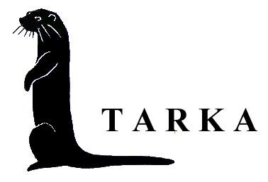
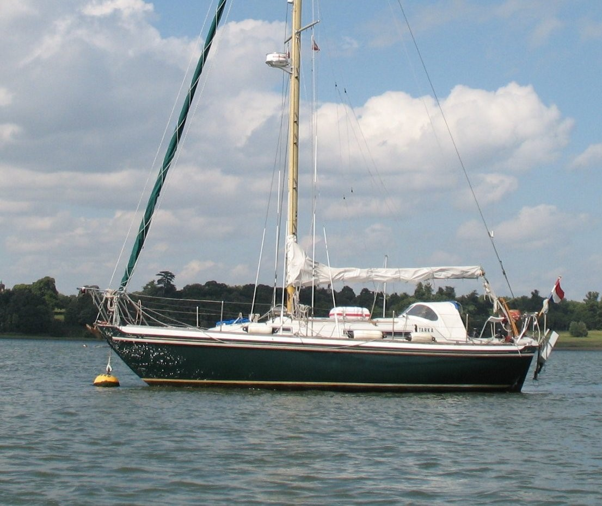
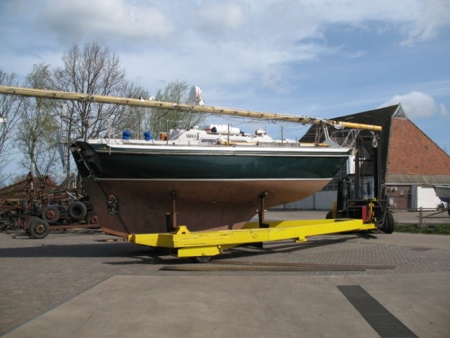
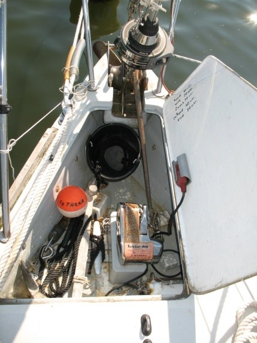
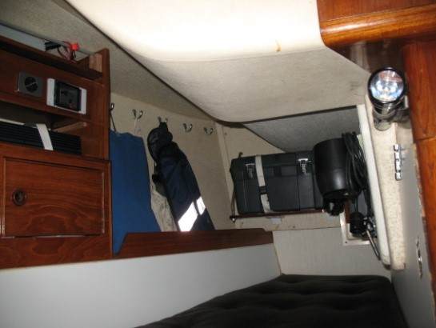
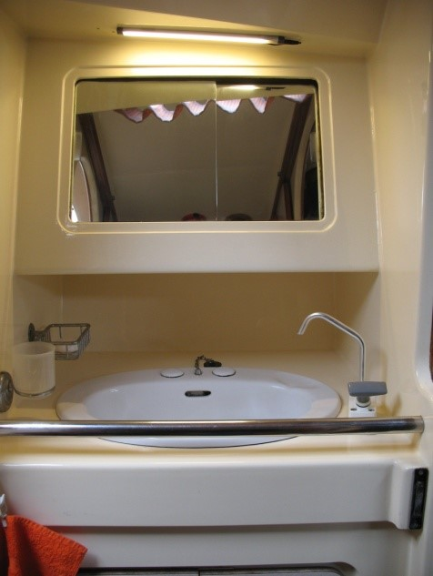

<!DOCTYPE HTML PUBLIC "-//W3C//DTD HTML 4.01 Transitional//EN">
<html><head></head>
<body><div style="text-align: center;">
	<table style="text-align: left; width: 1024px;" border="0" cellpadding="2" cellspacing="2">
		<tbody>
			<tr>
				<td style="vertical-align: top;"><br></td>
				<td style="vertical-align: top;"><h1 style="text-align: center;"> Uitrusting zeiljacht "TARKA" met enkele foto's.</h1></td>
			</tr>
		</tbody>
	</table>
  <table style="text-align: left; width: 1024px; margin-left: auto; margin-right: auto;" border="0" cellpadding="2" cellspacing="2">
   <tbody>
     <tr>
       <td style="vertical-align: top;"><br>
       <span style="font-style: italic; font-weight: bold;">Tarka op de rivier de Orwell in Engeland</span><br>
      </td>
    </tr>
  </tbody>
</table>
</div>

<div style="text-align: center;"><span style="font-style: italic;"><span style="font-weight: bold;"><br>
</span></span>
<div style="text-align: left;"><span style="font-weight: bold;"><br>
Informatie
betreffende het zeiljacht "TARKA".<br>
</span>
<table style="text-align: left; width: 1024px;" border="0" cellpadding="2" cellspacing="2">
  <tbody>
    <tr>
      <td style="vertical-align: top; width: 50%;" ;="">
      <p class="MsoNormal"><span style="font-size: 12pt; font-family: &quot;Times New Roman&quot;,serif;">Tarka
is een
Nicholson 31, ontworpen en gebouwd door <br>
Camper en Nicholson te Gosport in
Engeland.<o:p></o:p><br>
Ze is een klassiek
gebouwde langkieler met een weggesneden <br>
voorvoet. Afmetingen 9,32 x 3,12 x 1,52
mtr.<o:p></o:p><br>
Gewicht 6 ton. Ze
heeft een sandwich dek en opbouw. Het schip <br>
is een volledige S spant en o.a.
daardoor zeer soepel in zeegang. <br>
Voor een veeleisende zeiler die verre kusten
wenst te bezoeken, <br>
is deze Nicholson<span style="">&nbsp; </span>het
ideale zeegaande zeiljacht zoals de <br>
huidige eigenaar overtuigend heeft bewezen
met enige zeer <br>
interessante langere zeiltrips. Ze is volledig en zeer kompleet <br>
uitgerust om dit soort tochten te ondernemen.<o:p></o:p><br>
De indeling van het
schip is klassiek en uitermate geschikt voor <br>
langere zeereizen, dit i.v.m. het
ontwerp, de vorm, het <br>
zeegedrag alsmede de ruim 330 Ltr. grote watertank.<span style=""></span><span style=""></span><i style=""><o:p></o:p></i><br>
Ze kan probleemloos
single handed worden gezeild.<span style="">&nbsp; </span><o:p></o:p></span></p>
      <span style="font-size: 12pt; font-family: &quot;Times New Roman&quot;,serif;">Aantal
kooien: 6 stuks indien de loodskooi ook wordt
benut.<br>
De B.T.W. is voldaan.<br>
      </span></td>
      <td style="vertical-align: top; width: 50%;"><br>
      <span style="font-weight: bold; font-style: italic;">Traditionele
S spant langkieler. </span></td>
    </tr>
    <tr>
      <td> <br>
      </td>
      <td> <br>
      </td>
    </tr>
  </tbody>
</table>
<span style="font-weight: bold;"><br>
</span>
<table style="text-align: left; width: 1024px;" border="0" cellpadding="2" cellspacing="2">
  <tbody>
    <tr>
      <td style="vertical-align: top; width: 50%; text-align: center;"><br>
      </td>
      <td style="vertical-align: top; width: 50%;"><span style="font-weight: bold;">Dekuitrusting:</span> <br>
Het onderwaterschip heeft diverse lagen Coppercoat en Epoxy verf.<br>
Tweekleurlicht op de preekstoel.<br>
Ankerlier: elektrisch, Lewmar, verzonken in een ankerbak. CQR anker 35
Lb. <br>
met 50 mtr. RVS ankerketting.<br>
Stokanker plm. 15 kg. Het&nbsp; stokanker kan middels een RVS schalm
van 10 mm.<br>
aan een lijn worden gekoppeld, of aan de RVS ankerketting. <br>
Ankergewicht 15 kg. (staal / lood)<br>
Twee royale bronzen boegrollen voor ketting en lijn<br>
      <br>
      </td>
    </tr>
  </tbody>
</table>
<br>
<table style="text-align: left; width: 1024px;" border="0" cellpadding="2" cellspacing="2">
  <tbody>
    <tr>
      <td style="vertical-align: top;"><span style="font-size: 12pt; font-family: &quot;Times New Roman&quot;,serif;">Kettingstopper.<o:p></o:p><br>
Veiligheidslijnen in
het gangboord.<o:p></o:p><br>
Bijboot: vouwbare
Bananaboat,<span style="">&nbsp; </span>riemen, houder<span style="">&nbsp;
      </span>BB motor. Mastje, zeil, zwaarden, roertje
(n.a.b.) <o:p></o:p><br>
Wrijfhout, 6 fenders
en 2 grote fenders<o:p></o:p><br>
Voetpomp voor de
vouwfietsjes en fenders.<o:p></o:p><br>
Zonnepaneel op de
garage.<o:p></o:p><br>
Reddingsvlot in
container gemonteerd op het kajuitdak, vier persoons, Offshore. <o:p></o:p><br>
Lieren: 4 stuks ST
Lewmar en Enkes op de kuiprand. <o:p></o:p><br>
Keerblokken : 4 stuks
met klemmen t.b.v. reeflijn rolfok, halshoek halfwinder, bulletalies
etc.<o:p></o:p><br>
Buiskap met extra
handgreep aan de achterzijde en spandraden, zeer sterke constructie.<o:p></o:p><br>
Kuiptent met ramen,
deuropeningen en deelbare beugel. Opgeborgen in het voorschip.<o:p></o:p><br>
Dekkleed tot aan de
mast. (n.a.b.)<o:p></o:p><br>
Zonnetent. <o:p></o:p><br>
Zeilhuik. <o:p></o:p><br>
Losse zwemladder.
(n.a.b.)<br>
Windvaanstuurinrichting: het zware type Bouwvaan, met
standaard- en stormblad. <br>
Lange bedieningslijnen zodat de windvaan vanuit de
kajuit kan worden bediend tijdens zwaar weer.<o:p></o:p><br>
BB motor: op een
steun aan de hekstoel, Susuki 2 PK. <o:p></o:p><br>
Heklicht aan de
hekstoel.<o:p></o:p><br>
Bruce hekanker met ketting en lijn in een koker aan de
spiegel.</span></td>
    </tr>
  </tbody>
</table>
<table style="text-align: left; width: 1024px;" border="0" cellpadding="2" cellspacing="2">
  <tbody>
    <tr>
      <td style="vertical-align: top; width: 50%;"><br>
      <span style="font-weight: bold; font-style: italic;">Tarka in St.
Katharine's Dock in Londen.</span> </td>
      <td style="vertical-align: top; width: 50%; text-align: center;"><br>
      <span style="font-weight: bold; font-style: italic;">De Kajuit. </span></td>
    </tr>
  </tbody>
</table>
<b style=""><span style="font-size: 12pt; font-family: &quot;Times New Roman&quot;,serif;"><br>
</span></b>
<table style="text-align: left; width: 1024px;" border="0" cellpadding="2" cellspacing="2">
  <tbody>
    <tr>
      <td style="vertical-align: top;"><b style=""><span style="font-size: 12pt; font-family: &quot;Times New Roman&quot;,serif;">Mast en
zeilen:<o:p></o:p></span></b><span style="font-family: &quot;Times New Roman&quot;,serif;"><br>
      </span>Alu steekmast en
giek, voorzien van lieren waarvan 1 stuks ST, valstoppers en veilige
maststeps. <o:p></o:p><span style="font-family: &quot;Times New Roman&quot;,serif;"><br>
      </span>Maststeun zodat de
mast over het schip kan worden gelegd. (n.a.b.)<o:p></o:p><span style="font-family: &quot;Times New Roman&quot;,serif;"><br>
      </span>Radarreflector:
Lensref<span style="">&nbsp; </span>in de top van de mast.
Driekleurlicht,
stoomlicht, zalinglicht en Windex.<o:p></o:p><span style="font-family: &quot;Times New Roman&quot;,serif;"><br>
      </span>Vallen: voor
grootzeil, genua, spinnaker, reserveval en kraanlijn. <o:p></o:p><span style="font-family: &quot;Times New Roman&quot;,serif;"><br>
      </span>Alu giek met lieren,
reeflijnstopper en lazyjacks. <o:p></o:p><span style="font-family: &quot;Times New Roman&quot;,serif;"><br>
      </span>Spinaker boom,
uitschuifbaar, in houders.<o:p></o:p><span style="font-family: &quot;Times New Roman&quot;,serif;"><br>
      </span>Zwaar RVS staand want
met overbemeten Hasselfors spanners. <o:p></o:p><span style="font-family: &quot;Times New Roman&quot;,serif;"><br>
      </span>Extra hulpvoorstag dat gebruikt wordt voor de halshoek
van de halfwinder. <span style="font-family: &quot;Times New Roman&quot;,serif;"><br>
      </span>Dit hulpvoorstag kan middels een zware pelikaanhaak achter
de ankerbak worden gezet zodat de stormfok met leuvers <o:p></o:p><span style="font-size: 12pt; font-family: &quot;Times New Roman&quot;,serif;">hieraan
kan worden gehesen.<span style="">&nbsp;&nbsp; </span><o:p></o:p></span><span style="font-size: 12pt; font-family: &quot;Times New Roman&quot;,serif;"><br>
Rolreefgenua met
Furlex trommel(2015), 32 m2. met beschermhoes.<o:p></o:p></span><span style="font-size: 12pt; font-family: &quot;Times New Roman&quot;,serif;"><br>
Grootzeil 22 m2. ,
met drie reven. Zeilhuik<o:p></o:p></span><span style="font-size: 12pt; font-family: &quot;Times New Roman&quot;,serif;"><br>
Halfwinder, 50 m2.,
in een "Slurf".<o:p></o:p></span><span style="font-size: 12pt; font-family: &quot;Times New Roman&quot;,serif;"><br>
Stormfok, 7 m2,
voorzien van leuvers. (n.a.b.)<o:p></o:p></span><span style="font-size: 12pt; font-family: &quot;Times New Roman&quot;,serif;"><br>
Fok 1, voorzien van leuvers. (n.a.b.)<o:p></o:p></span><span style="font-size: 12pt; font-family: &quot;Times New Roman&quot;,serif;"><br>
Spinaker, 70 m2,
(n.a.b.)<o:p></o:p></span> </td>
    </tr>
  </tbody>
</table>
<b style=""><span style="font-size: 12pt; font-family: &quot;Times New Roman&quot;,serif;"></span></b><br>
<br>
<table style="text-align: left; width: 1024px;" border="0" cellpadding="2" cellspacing="2">
  <tbody>
    <tr>
      <td style="vertical-align: top; width: 33%;"><span style="font-weight: bold;">Indeling.</span><br>
Zie de bijgaande tekening.<br>
      </td>
      <td style="vertical-align: top; width: 67%;"><br>
      </td>
    </tr>
  </tbody>
</table>
<br>
<table style="text-align: left; width: 1024px;" border="0" cellpadding="2" cellspacing="2">
  <tbody>
    <tr>
      <td style="vertical-align: top; width: 50%;"><span style="font-weight: bold;">Voorpiek: </span>twee kooien met kussens
en vulstuk.<br>
Onder de kooien royale berging voor proviand, stormfok, halfwinder,
waterslangen etc.<br>
Berging voor de kuiptent en de deelbare benodigde beugel hiervoor.<br>
RVS mooringhaak.<br>
12 Volt Dompelpomp voor algemeen gebruik en schoonspuiten ankerketting.<br>
Kastruimte voor kleding, vuurwerk*, onderdelen voor bijboot,<br>
gastvlaggen van vrijwel geheel europa, complete set signaalvlaggen etc.<br>
Opgang naar het voorste vluchtluik. Vluchtluik heeft ventilatie.<br>
Toegang tot de kettingbak.<br>
Reddingsvesten.<span style="font-weight: bold;"></span><br>
      <span style="font-weight: bold;"> </span> </td>
      <td style="vertical-align: top; width: 50%; text-align: center;"><br>
      <span style="font-weight: bold; font-style: italic;">De voorpiek </span></td>
    </tr>
    <tr>
      <td style="vertical-align: top;"><span style="font-weight: bold;">Toiletruimte:
      </span>porseleinen wasbak met hand- en voetpomp.<br>
Toiletkast met bergruimte voor toiletartikelen. Bergruimte onder de
wasbak. Huidafsluiter. Ruimte voor ankerbal, kegel, containertje voor
spiritus,<br>
trechtertjes, schoonmaakmiddelen etc.<br>
Toilet: Lavac vacuümtoilet met huidafsluiter. Hangkast. <br>
Vuilwatertank plm. 55 ltr. Met een afsluiter zodat ook rechtstreeks
naar buiten kan worden geloosd.<span style="font-size: 11pt; font-family: &quot;Calibri&quot;,sans-serif;" lang="EN-US">De Toiletruimte
kan middels twee schuifdeuren worden gescheiden van de voorpiek en de
kajuit.</span> </td>
      <td style="vertical-align: top;"><br>
      </td>
    </tr>
  </tbody>
</table>
<br>
<table style="text-align: left; width: 1024px;" border="0" cellpadding="2" cellspacing="2">
  <tbody>
    <tr>
      <td style="vertical-align: top; width: 33%;"><br>
      <span style="font-weight: bold; font-style: italic;">Lavac toilet
en sewagetank. </span></td>
      <td style="vertical-align: top; width: 33%;"><br>
      <span style="font-weight: bold; font-style: italic;">Hondekooi,
zoeklicht, gereedschap </span></td>
      <td style="vertical-align: top; width: 33%;"><br>
      <span style="font-weight: bold; font-style: italic;">Wasgelegenheid
en toiletkast</span> </td>
    </tr>
  </tbody>
</table>
<span style="font-weight: bold;"></span><span style="font-style: italic;"><span style="font-weight: bold;"></span></span></div>
</div>
<br>
<span style="font-weight: bold;"></span>
<table style="text-align: left; width: 1024px;" border="0" cellpadding="2" cellspacing="2">
  <tbody>
    <tr>
      <td style="vertical-align: top;"><span style="font-weight: bold;">Kajuit:
      </span><br>
In de hondenkooi o.a. ondergebracht handzoeklicht, twee stuks Autohelm,
zeer uitgebreide gereedschapskist, automatisch reddingsvest,
warmtelaarzen, overlevingspak.<br>
Onder de bak- en stuurboordbank een groot aantal kunststof dozen met
een grote verscheidenheid aan RVS materiaal, elektra, schroeven en
bouten, <br>
naaigerei als takelgaren, Speedy stitcher, palmplaatje etc. Aparte
doos met reserve delen voor de motor zoals zinkanodes, impellers,
pakkingmateriaal, koppakking, 2 verstuivers, V snaren.<br>
Verder diverse gaskoppelingen om een gasfles in het buitenland te
vullen, diverse koppelingen voor waterslang, res. lampen en zekeringen,
RVS sluitingen etc.<br>
      <br>
      </td>
    </tr>
  </tbody>
</table>
<span style="font-weight: bold;"><br>
</span>
<table style="text-align: left; width: 1024px;" border="0" cellpadding="2" cellspacing="2">
  <tbody>
    <tr>
      <td style="vertical-align: top;"><br style="font-weight: bold; font-style: italic;">
      <span style="font-weight: bold; font-style: italic;">Kaartentafel
en deel v.d. instrumenten.</span> </td>
      <td style="vertical-align: top; font-weight: bold; font-style: italic;">
      <div style="text-align: left;"><br>
      </div>
Kombuis, 2pits fornuis/oven, slingertafel </td>
    </tr>
  </tbody>
</table>
<span style="font-weight: bold;"><br>
</span>
<table style="text-align: left; width: 1024px;" border="0" cellpadding="2" cellspacing="2">
  <tbody>
    <tr>
      <td style="vertical-align: top;">De loodskooi wordt momenteel
gebruikt voor het opbergen van twee vouwfietsjes in een hoes.<br>
Het bijbehorende kussen van de loodskooi is momenteel niet aan boord.
(n.a.b.)<br>
Zware stevige tafel met slingerlijsten, uitklapbaar.<br>
De kombuis is voorzien van dubbele spoelbakken en zoet- en zoutwater
voetpompen.<br>
Het cardanisch opgehangen RVS tweepitsfornuis en oven zijn thermisch
beveiligd. De oven is voorzien van een glazen deur. Elektrische
ontsteking. <br>
Boven het aanrechtblad een perfect werkende halfcardanische
slingertafel. Kopjes en borden blijven staan.<br>
      <br>
Geïsoleerde box plm. 80 Ltr. inhoud.&nbsp; <br>
Ruimte voor pannen, borden, bestek etc. De originele borden, voorzien
van het Camper en Nicholson embleem, zijn nog steeds aanwezig.<br>
Via een tweetal mangaten toegang tot de watertank van plm. 330 Ltr.<br>
Diepe bilge met lenspomp en handle in de kuip. <br>
Brandblusser.<br>
Alle kooien zijn voorzien van slingerzeilen, behalve de hondenkooi
natuurlijk.<br>
Onder en achter de kooien, kasten en aanrecht zijn zeer grote
bergingen. <br>
Men kan probleemloos proviand meenemen voor vele maanden. &nbsp; <br>
      <br>
Royale kaartentafel, geschikt voor een halve BA kaart, met uitstekende
kaartenberging. <br>
Voldoende ruimte voor alle gebruikelijke navigatiemiddelen, potloden,
gum, passer, kaartenloupe etc. <br>
Diverse pilots aanwezig van Engeland, Oostzee etc. Indien
geïnteresseerd ongeveer 200 BA kaarten en overzeilers en wat oudere BA
van geheel Engeland, Schotland en Noorwegen beschikbaar, alsmede
Nederland, Duitsland, Denemarken, Finland, Finse Saimaa meren en
Rusland.<br>
Onder de hondenkooi ruimte voor de beide accus en diverse reserve
materialen.<br>
De banken, loodskooi en hondenkooi zijn voorzien van bruine
gecapitonneerde dikke kussens. In de kajuit o.a.: barometer.<br>
      </td>
    </tr>
  </tbody>
</table>
<span style="font-weight: bold;"></span><br>
<table style="text-align: left; width: 1024px;" border="0" cellpadding="2" cellspacing="2">
  <tbody>
    <tr>
      <td style="vertical-align: top;"><br>
      <span style="font-style: italic; font-weight: bold;">Taylors
dripfeedkachel</span>. </td>
      <td style="vertical-align: top;">Taylors dripfeedkachel met
vlambeveiliging en afvoer door het dak. Deze kachel verbruikt uiteraard
geen elektra. <br>
De tank bevindt zich aan dek i.v.m. morsen. Werkt op diesel of
petroleum.&nbsp;&nbsp;&nbsp; <br>
Kast voor pilots, boeken etc., medicijnkast, drankenkast, klerenkast. <br>
Twee losse kussens voor de kuipbanken.<br>
Ankerlicht met kabel en LED lampje<br>
      <br>
      <span style="font-weight: bold;">Nautisch/navigatie:</span><br>
De vereiste navigatieverlichting. Elektrische verdeling met
groepschakelaars, automaten en ledindicatie. <br>
Walaansluiting met diff. schakelaar, kabel, verlengkabel en
laadgelijkrichter.<br>
Omvormer 12 V.dc / 230 V. ac. 200 Watt.<br>
Stuurkompas:&nbsp; Sestrel Moore met verlichting en
Pelorus.&nbsp;&nbsp;&nbsp; <br>
Kaartplotter:&nbsp; Raymarine eS75 (2019). Kan worden opgesteld aan SB zijde
onder de buiskap. Navionics kaarten.<br>AIS Transponder Class B (2019) Em-Trak B350 5 Watt SOTDMA gekoppeld aan de Raymarine plotter.<br>Log / echolood:&nbsp; Autohelm Bidata bij de kaartentafel met Multi
repeater in de kuip. <br>
AIS ontvanger:&nbsp; NASA Marine gekoppeld aan de GPS.<br>
GPS navigator:&nbsp; Furuno GP-32. Met WAAS. <br>
      <br>
      <br>
      </td>
    </tr>
  </tbody>
</table>
<br>
<table style="text-align: left; width: 1024px;" border="0" cellpadding="2" cellspacing="2">
  <tbody>
    <tr>
      <td style="vertical-align: top;">Radar:&nbsp; Raytheon R10XX.<br>
Marifoon:&nbsp; Sailor RT 144 met ATIS en gekoppelde SWR meter,
zee-uitvoering, kan op alle kanalen op vol vermogen werken.<br>
Handheld Marifoon:&nbsp; ICOM IC-M71.<br>
Navtex:&nbsp; Lokata type 1 met papierprinter.<br>
Radio/CD speler:&nbsp; JVC AM/FM met twee speakers.<br>
Communicatie ontvanger:&nbsp; Yeasu FRG-7700. AM-SSB lower en upperband
bereik van 0  30 Mc.<br>
Steiner scheepskijker 7 x 50.<br>
Handlicht:&nbsp; Mag-Lite groot.<br>
Stuurautomaat:&nbsp; Autohelm 2000 en Autohelm 800, een mini
peilkompas. Handzoeklicht in houder.<br>
Verlichting met witte- en rode nachtlichtlampen. Diverse
verlichtingsarmaturen voorzien van Led<br>
Radarreflector Lensref in de top van de mast.<br>
      <br>
      </td>
      <td style="vertical-align: top;"><br>
      <span style="font-weight: bold; font-style: italic;">Kooien
voorzien van slingerzeilen </span></td>
    </tr>
    <tr>
      <td style="vertical-align: top;"><span style="font-weight: bold;">Motorruimte:<br>
      </span>Motor: Yanmar 2 QM 20. Twee cilinder met directe
inspuiting, kleplichters, slinger, filters en waterscheider.
Brandstoftank met peilglas en waterzak. <br>
Inhoud plm. 70 Ltr. Morse eenhandel bediening in de kuip.<br>
Alarmering: optisch en akoestisch voor oliedruk, watertemp. en
batterij. <br>
Losse vacuüm carterpomp.(n.a.b.)<br>
Verbruik van deze motor is zeer gering. Op rustig water bij een
snelheid van ruim 5' ligt het verbruik op plm.1,1 Ltr./h. <br>
      <br>
Zeer veel reservedelen zoals: impellers, zinkanodes, V snaar, temp. en
oliesensor,<br>
filters, koppakking. In de hondenkooi een&nbsp; zeer uitgebreide en
kompleet ingerichte gereedschapskist. <span style="font-weight: bold;">&nbsp;&nbsp;&nbsp;
      <br>
      </span> </td>
      <td style="vertical-align: top; text-align: center;">
      <div style="text-align: left;"><br>
      </div>
      <div style="text-align: left;"><span style="font-weight: bold; font-style: italic;">2 cil. 20PK diesel</span></div>
      </td>
    </tr>
  </tbody>
</table>
<br>
<table style="text-align: left; width: 1024px;" border="0" cellpadding="2" cellspacing="2">
  <tbody>
    <tr>
      <td style="vertical-align: top; width: 50%;"><br>
      </td>
      <td style="vertical-align: top; width: 50%;"><span style="font-weight: bold;">De Kuip:<br>
      </span><span style="font-size: 11pt; font-family: &quot;Calibri&quot;,sans-serif;" lang="EN-US">De
kuip heeft veilige, diepe en goed zittende banken.</span><br>
      <span style="font-size: 11pt; font-family: &quot;Calibri&quot;,sans-serif;" lang="EN-US">De bakskist is zeer royaal,
waarin opgeborgen aan haken o.a.: lijnen en trossen, schoten,
bulletalies, halslijn, waarloos touwwerk.<br>
Zweedse mooringhaak in de voorpiek.<br>
Ruimte voor twee extra dieseljerrycans*, 2 res. gasflessen*, jerrycan
voor water, petroleum, fenders, de roeiriemen, etc.<br>
Een aparte gasbun met afvoer naar buiten. De gasbun is geschikt voor de
bekende grijze propaan fles 5 kg.<br>
Onder de achterbank in de kuip ruimte voor: smeerolie voor de motor* en
keerkoppeling*, jerrycans voor afgewerkte olie, petroleum, spiritus
etc. <br>
      <br>
      </span> </td>
    </tr>
    <tr>
      <td style="vertical-align: top; width: 50%;"><br>
      <span style="font-weight: bold; font-style: italic;">Tarka ergens
in Noorwegen</span> </td>
      <td style="vertical-align: top; width: 50%;"><br>
      <span style="font-weight: bold; font-style: italic;">Tarka op
Spitsbergen</span> </td>
    </tr>
  </tbody>
</table>
<br>
<span style="font-weight: bold;">Opm: De met een sterretje (*) gemerkte
onderdelen behoren niet tot de levering bij verkoop.</span><br>
<span style="font-weight: bold;">(n.a.b.) Betekent: momenteel Niet Aan
Boord doch behoort wel tot de verkoop.</span><br>
<br></body></html>